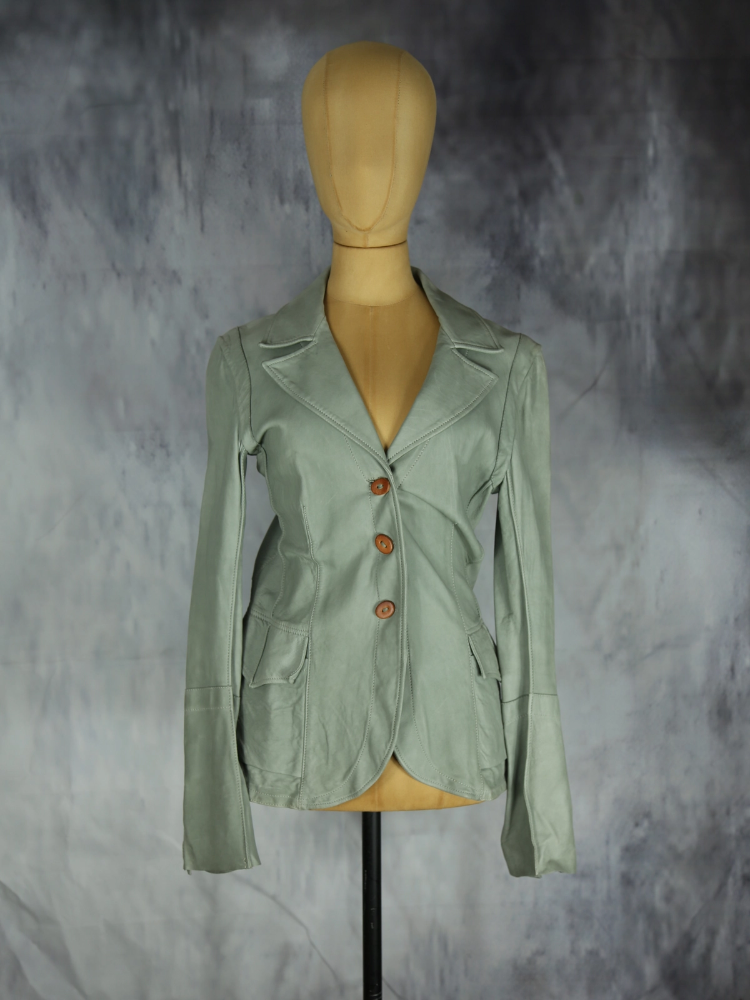

Isaac Sellam
190.00 €
Aus dem kuratierten Archiv von Disorder119. Fein gearbeiteter Lederblazer von Isaac Sellam in einem kühlen Grau-Grün mit matter, leicht gewaschener Oberfläche. Der Farbton bewegt sich zwischen Salbei und Stein, wirkt zurückhaltend und zugleich eigenständig. Die Silhouette ist tailliert konstruiert und folgt klar der Körperlinie. Präzise gesetzte Nähte strukturieren Vorder- und Rückseite und verleihen dem Modell eine architektonische Ruhe. Das Revers ist klassisch gehalten, die Front wird über drei Knöpfe in warmem Braunton geschlossen. Aufgesetzte Taschen und lange Ärmel mit markanter Knopfleiste an den Manschetten unterstreichen den handwerklichen Charakter. Rückseitige Schlitze sorgen für Bewegungsfreiheit und eine ausgewogene Proportion. Das Leder zeigt eine natürliche Struktur mit subtiler Patina. Details: Marke: Isaac Sellam Farbe: Grau-Grün Größe: 42 Passform: Tailliert geschni
Im Archiv ansehen & in den Warenkorb →